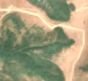
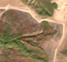

5,4 ha de pădure schimbată lângă Plugova
Între 20 august 2026 și 22 august 2026, pe aproximativ 5,4 ha de pădure din comuna Mehadia, lângă Plugova, județul Caraș-Severin, imaginile Sentinel-2 arată că vegetația a dispărut sau s-a schimbat puternic. Nu pare o tăiere de lemn.
Autorizația de tăiere
nu e tăiere de pădure
Schimbarea nu pare tăiere de lemn, așa că autorizațiile de tăiere nu se aplică. Analistul AI vede urme de foc, nu de tăiere.
Ce se vede în poze: În poza «înainte» zona marcată este acoperită de pădure verde, iar în poza «după» versantul are o culoare brun-roșcată închisă, cu margini neregulate, care se întinde mult în afara zonei marcate. Seamănă mai degrabă cu o zonă arsă decât cu o tăiere, pentru că nu se văd cioate, movile de crengi sau drumuri de scos lemn.


Înainte și după: Copernicus Sentinel-2, 10 m pe pixel, conturul zonei cu portocaliu. Poza detaliată (Esri World Imagery) e de acum 1–4 ani: arată ce era acolo înainte, nu tăierea.
Pe scurt
- Identificator
- 20260822_44969_22381
- Locul
- Plugova, comuna Mehadia, județul Caraș-Severin (SIRUTA 53274)
- Coordonate (centru)
- 44.96891, 22.38125 · Google Maps · OpenStreetMap
- Suprafața
- 5,4 ha (din pixeli de 10 m; ± câțiva pixeli pe margine)
- Ultima imagine cu pădurea întreagă
- 20 august 2026
- Prima imagine cu schimbarea
- 22 august 2026
- Imagini în care se vede schimbarea
- 17
- Cât de sigur e semnalul din satelit
- ridicată
- Terenul
- pădure de stat, după amenajamentul silvic publicat
- Garda Forestieră
- Timișoara
Dacă vrei să verifici sau să sesizezi
- Pădurile din județul Caraș-Severin sunt în grija Gărzii Forestiere Timișoara, care controlează tăierile și dă amenzile.
- Formularul Gărzii Forestiere Naționale primește sesizări și fără nume. Trimite linkul acestei pagini, coordonatele și pozele. Dacă tăierea e în desfășurare, sună la 112.
- Autorizațiile și transporturile de lemn se pot căuta în Inspectorul Pădurii.
Pagina arată ce se vede din satelit și ce scrie în registrul public; nu e o dovadă în sine.
Cum citezi zona
Linkul acestei pagini nu se schimbă. Dacă zona iese vreodată de pe hartă, pagina rămâne, cu data și cu ce știam despre ea.
Pădurea RO, zona 20260822_44969_22381: 5,4 ha, Plugova, comuna Mehadia, județul Caraș-Severin; schimbare văzută din satelit între 20 august 2026 și 22 august 2026. https://iliemihai.github.io/padurea-ro/zona/20260822_44969_22381/ (consultat la [data]). Date: CC BY 4.0.
Datele zonei: GeoJSON · toate zonele: date deschise · licența CC BY 4.0.
Istoricul zonei pe hartă
Starea se poate schimba când registrul publică o autorizație sau când analistul vede poze mai bune. O ținem aici, ca un link citat să arate și ce spuneam atunci.
Pe hartă cel târziu din 5 noiembrie 2026.
- 5 noiembrie 2026 – azi · nu e tăiere de pădure
Detalii tehnice, pentru verificare
De ce acest nivel de încredere:
- văzută schimbată în 17 imagini diferite
- peste 3 ha
- AI-ul vede pădure dispărută
- în poze, zona se schimbă vizibil față de pădurea din jur
Ce a văzut analistul cu context: În imaginea Sentinel-2 «după» și în vederea largă, tonul brun-violaceu acoperă o pantă întreagă, cu limite neregulate și fâșii verzi rămase în văile adiacente, ceea ce este tipic pentru o cicatrice de incendiu și nu pentru un parchet cu margini drepte. Pădurea din jur rămâne verde sau galbenă, deci nu este doar culoare de toamnă. Permisul de tăiere cel mai apropiat este la 391 m fără suprapunere, iar zona (5,4 ha, pantă de 20°) nu are geometrie de șantier. Lipsa fumului și rezoluția de 10 m lasă totuși o incertitudine, iar o variație de toamnă pe versant nu poate fi exclusă complet.
- Placa Sentinel-2
- 34TEQ
- NDVI de referință
- 0.81
- NBR de referință
- 0.54
- Scăderea în pădurea din jur
- 0.1
- Persistență
- 1.0
- NDVI / NBR după
- 0.288 / -0.141
- Analistul de zi (model)
- taiere · 0.8 · claude-haiku-5-5
- Analistul cu context (model)
- foc · 0.55
Cum se calculează fiecare: metodologia.
Pune harta zonei într-un articol
Copiază codul în articol (merge în majoritatea site-urilor de știri). Sau pune doar linkul: WhatsApp, Facebook și X arată singure poza zonei.